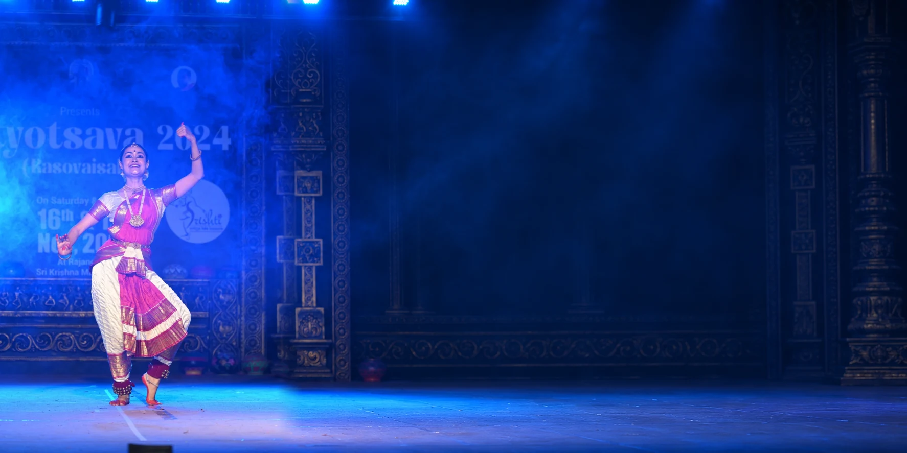
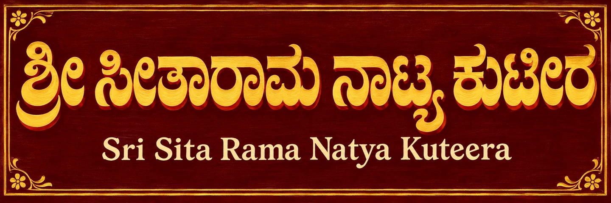
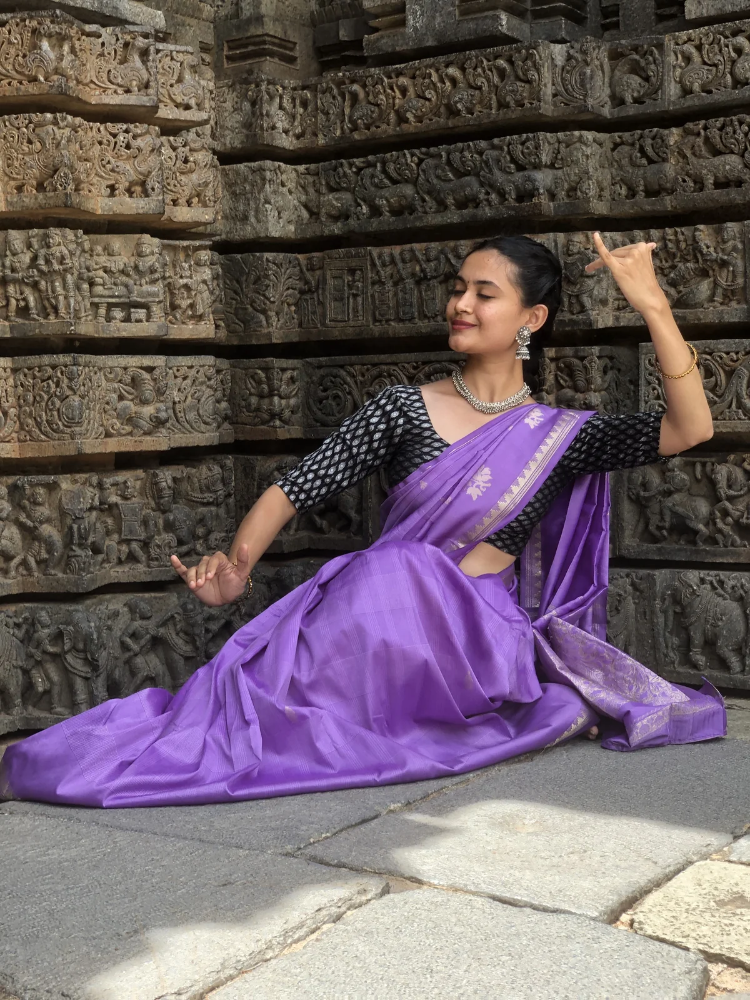

Vidushi | Artiste · Choreographer · Teacher
Vidushi Krithi Kailar
The body speaks.
The spirit listens.

From 3 December 2026 · Jayanagara Rama Mandira I am interestedOnline classes · I am interestedRooted in tradition. Alive in the present.Mysuru, Karnataka
A life in Bharatanatyam
Where disciplined movement
becomes inner experience.
Sixteen years and more of learning, a continuing dialogue with music and philosophy, and an art offered with attention.

A reflective gaze

Stories in movement